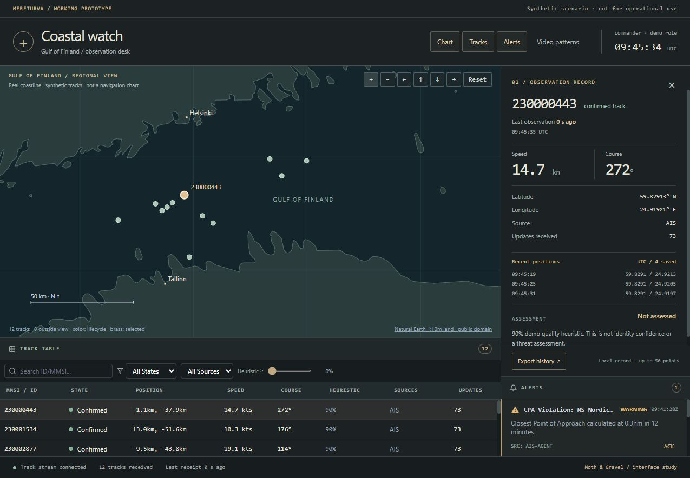

Coastal Watch
See how a chart shows the last observation after a stream stops. A working interface on a real coastline with synthetic tracks.
Open the coastal chartWhen a device and its dashboard disagree, an operator needs to know what was last observed, what has gone stale, and what is safe to do next. We design operator interfaces and prototype the software that connects device state to the screen.

A screenshot, a redacted trace, or a description of the moment is enough to start. This service is for teams improving a dashboard or designing the first operator view for a connected product.
See how a chart shows the last observation after a stream stops. A working interface on a real coastline with synthetic tracks.
Open the coastal chartMove a fixed inspection clock forward and watch the connection label diverge from the freshness of the picture.
Try the inspection clockFollow a simulated load decision with a stale reading and a permission that arrives after conditions have changed.
Try the field power modelTypically 1–2 weeks · fixed fee
Tell us which screen people use and where it gets difficult. Every step of the brief is optional.